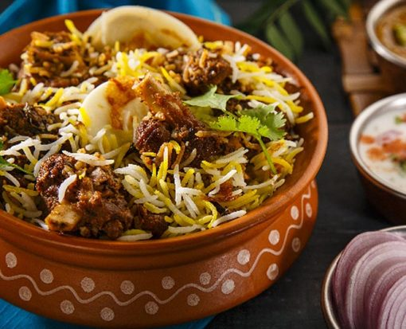

Welcome to the Ultimate Biryani Enthusiasts Club!

Are you passionate about perfectly spiced rice, tender meat, and the artful layering that creates the world's most beloved rice dish? You've found your people! We are a community of Biryani lovers united by our appreciation for this royal delicacy.
From the fragrant Lucknowi style to the fiery Hyderabadi version, from vegetarian jackfruit variations to classic chicken and mutton preparations - we celebrate every authentic style and innovative interpretation of this magnificent dish.
Our fan club at a glance...
- Home cooks sharing their family recipes
- Biryani historians exploring the dish's rich heritage
- Food enthusiasts discovering regional variations
- Expert tips on cooking the perfect biryani
- Monthly meetups featuring different styles of biryani
- Special events with master chefs and food historians